One of the main overarching unsolved issues within modern society is the lack of affordable mental health care. While most industrialized nations have dedicated mental health care programs, short of being absolutely medically necessary these services are seldom affordable to the general public. But the necessity for affordable mental health care is very much evident as the rise in mental disorders especially among the millennial population is left untreated. The current systems in most countries isn’t designed to treat such large numbers effectively as such a program would be far too uneconomical amongst a host of other problems. So this is when things get tricky.
One of the most innovative methods provided to solve this problem, is the idea of virtual therapy. The idea goes as - by providing therapy via virtual therapy systems we could vastly reduce the cost and logistics involved in traditional face to face therapy but without diminishing the positive elements of such therapy, whilst maybe diminishing the negatives.
Our Project plans are to create an Artificial Intelligence Bot called Kuthulu. This will be capable of reading signs and symptoms of degrading mental health. When appropriate, Kuthulu will assist the individual by suggesting a diet, an exercise program, identifying someone who might help and if the need arises, provide access to treatment resources available.
An adequate level of mental stability is required to function in a society, as mental health affects our emotions, thoughts and behaviours without it many can’t be responsible individuals, but the existing institutions and systems in place are not well equipped enough to treat the overwhelming amount of individuals that need proper care. As such people have come up with many novel approaches to this crisis, one of which is the idea of AI based mental health counselling. The idea behind AI based counselling is simple, the goal is to provide cost effective service to individuals that otherwise might be in an unstable state of mind with the help and guidance needed to make their lives a little bit better via the use of novel technologies that utilize advanced algorithms.
This fits in perfectly with the current trend of utilising AI based technologies to modify social, personal and/or physical human aspects whether it be through AI based dietary suggestions, AI based fashion advice or even AI based mental health counselling.
As a group we decided that this social issue is dear to our hearts as many of us know individuals that have struggled with mental anguish on a daily basis.
This project compelled us as a group to come up with a product or service that utilises novel technologies for the betterment of society, and for the most part we think we have achieved on that task, whilst also showcasing our innovative capacity to come up with socially beneficial technological systems. A future employer could positively judge us on our ability to be both socially responsible and innovative.
Kuthulu will be giving support and assistance to people suffering mental health issues. Although it is still at its infancy, the vision is to be one of the best of it's class. Currently there are AI bots that have made a lot of strides towards achieving success in this area like the ones listed below. However, we are hoping that we will be able to compete with them eventually with the advisement of our teams programming knowledge and expertise.
Our vision is also to eventually make this bot a total health care assistant with the ability to monitor real time health condition of an individual. It will do this by monitoring heart rate, pulse, blood pressure, body temperature, body language, perspiration, posture, alertness, verbal language etcetera. For this kind of capability we will have to use third party tools like fitbit , smart watches or any device that we may design to monitor these events preferably with wifi or usb connectivity. These will help diagnose any impending changes of one's well being in the hands of a medical professional. We hope that health professionals will join us as consultants to service our clients who are willing to pay for professional help. This will enable any individual who is willing to use the service to have any mental health or any health needs addressed in real time. This will all occur from the comfort of their homes or any place assistance is required..
Although our project is in its infancy, I am sure it is clear that it has a feature in the current AI assisted development environment. We believe that we will eventually be able to deliver a far more superior product than our competitors.
Software that we anticipate using to develop our AI bot is RASA an open source AI engine with a natural language interpreter. For Further logic and cognitive capability development we will have to use Python language that works well with RASA . https://rasa.com/
Please see below for similar ideas and products relating to our Project.
For the meantime, our project it going to be virtual. It will take the form of a chatbot that responds to your questions with predetermined answers as a proof of concept.
The group plans for our project to evolve firstly into an interactive device similar to Google Home or Alexa. As technology progresses, so will our project. The futuristic vision is to have the project become an Internet of Things device using Artificial Intelligence as the interface.
Aim: To Break the Stigma behind Mental Health by providing vital Mental Health assistance to those in need.
This is our Aim for the Project. Breaking the Stigma is the main message that our team is working towards with our idea. We see this stigma as the main issue when people would be seeking mental health assistance. We believe that a person in the comforts of their own home and with trust in our platform, can make the first step towards accepting their mental health signs and working towards rectifying the issue.
Goals: To help the 75% of people who do not seek traditional mental health assistance.
The current population of Australia is 24 million people. 45% of Australians that will experience a mental illness in their lifetime makes up 10 million people. Of that, 54% of people will not access the appropriate health services that could assist them in rectifying their mental health condition. This is a stagerring 5.8 million people that will not get the help they need. This is our most important goal. If we can assist a small percentage of that number, we will be very happy with the final product. If this project is to expand globally, the figures will be astounding.
Reference: Blackdoginstitute.org.au. Fact-sheets (2019). [online] Available at: https://www.blackdoginstitute.org.au/docs/default-source/factsheets/facts_figures.pdf?sfvrsn=10
Goals: Create the chat bot to provide an example of our idea
We have produced an initial concept of what our basic bot would look like. It asks questions of the individual that tries to point them in the right direction of assistance. This bot needs a lot of work to make it more useful and assist us in our main aim. With further work, this bot would provide updated mental health knowledge to any individual that requres it.
Goals: Provide details on how this will break the Stigma
‘Breaking the Stigma behind Mental Health’ is our catchphrase for the project. We feel that by providing a bot to a person to talk to about their issues will reduce the number of people that do not accept or pursue assistance with their mental health issues. This is a very important part of our project as there may be push back or reluctance to initially talk with AI about your personal issues. Providing these details will hopefully allow a smooth transition into this futuristic technology.
Goals: Build or utilise an AI Algorithm
As this is a very complex and new technology, we will most likely be using an already designed Algorithm for this project. This will come at a cost as the designers of such an algorithm would have been working hard on this for some time. We are hoping that if we are able to find an algorithm that fits our needs, this will save us a lot of time and energy to build one.
Goals: Identify software to run the AI algorithm
As with the Algorithm, this goal is solely reliant on software available on the market to run our algorithm. This will also incur a cost to utilise and may come with advantages or disadvantages depending on the software capabilities.
Goals: Identify hardware that can accommodate Kuthulu
Identifying the hardware for our project will come when we have the algorithm and software running well. This will be one of the final parts to our project and will be crucial on how the technology will be used in the future. It will involve utilising sensors and new technologies in the home environment. This technology will also have to be very interconnectable with other appliances and devices in the home.
Goals: Connect with organisations and involve them in the process
With many other organisations out there working towards our common aim, it is imperative that we either collaborate, join or recruit with others to see this idea to fruition. We see this as one of the most important parts of the project.
Introduction
The Project was initially mandated by Chris as he asked everyone to submit their very own concept idea so we can compile those ideas and have a group vote. (a screenshot of the conversation can be found in fig 1.)
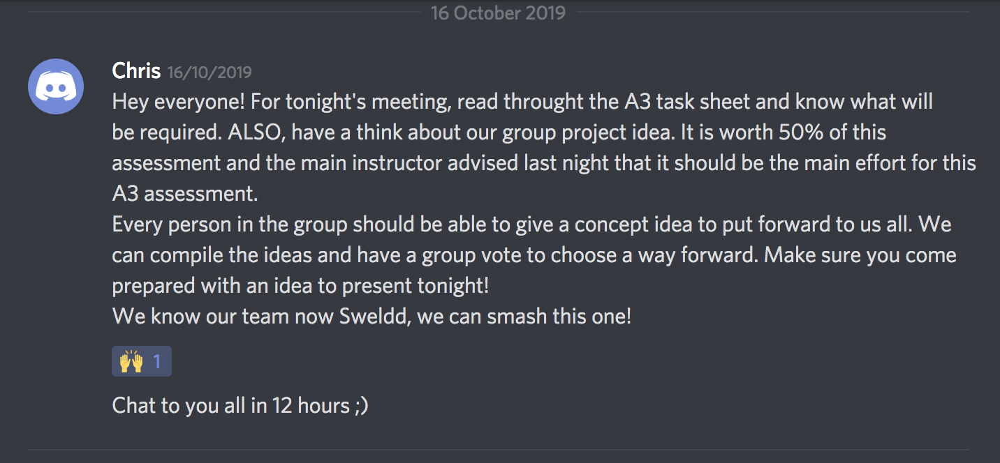
(fig 1.)
After everyone submitted their ideas, as a group we voted to work on an idea that would provide mental health counsel via a personality based chat bot. (a screenshot of the conversation can be found in fig 2.)
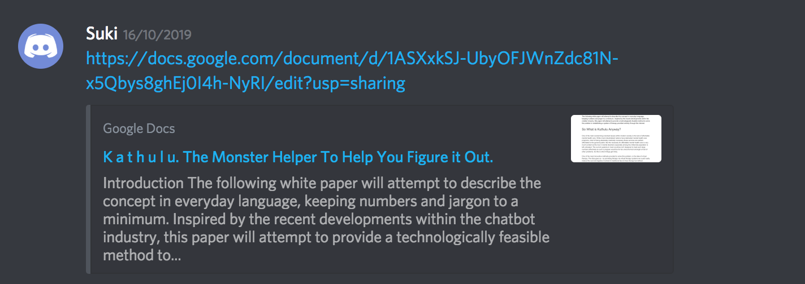
(fig 2.)
Why did we decide to go with this idea?
One in five Australians will suffer from some mental illness every year, and the vast majority of those individuals go untreated. AI technologies have been rapidly advancing over the past couple of years, so as a group we decided to come with an idea that can use this rapidly progressing technology to benefit these untreated individuals in a safe and cost effective way. We decided as a group that this technology could not only benefit these sick individuals but the entirety of our society in a positive manner.
Moving Forward
Moving forward Francis provided the group with a potential tool that could be used to build the chatbot. (fig 3.) But upon further inspection it was apparent that the learning curve would be too steep so we decided to go on a much simpler route. After much elaboration we finally decided to code the chatbot in eclipse and then transfer the code to a website via javascript.
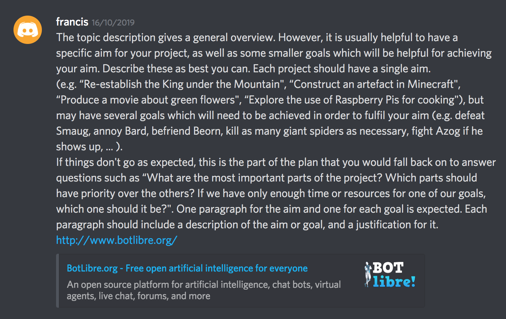
(fig 3.)
Before the end of this group meeting we allocated everyone particular responsibilities. Suki was tasked with coming up with a mockup of the chatbot. (fig 4.), Sophie was tasked with coming up with a storyboard (fig 5.), Francis was tasked with looking into open source chat bot software, Chris with the presentation script and Jordan with HTML and Javascript.
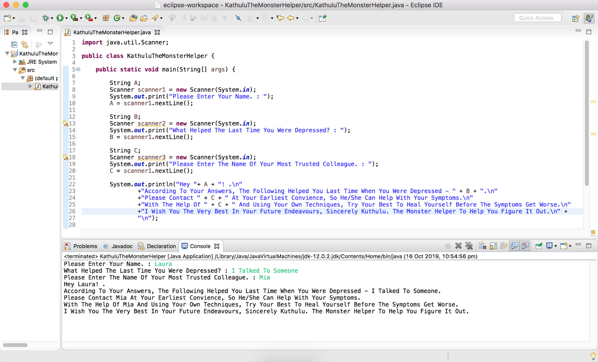
(fig 4.)
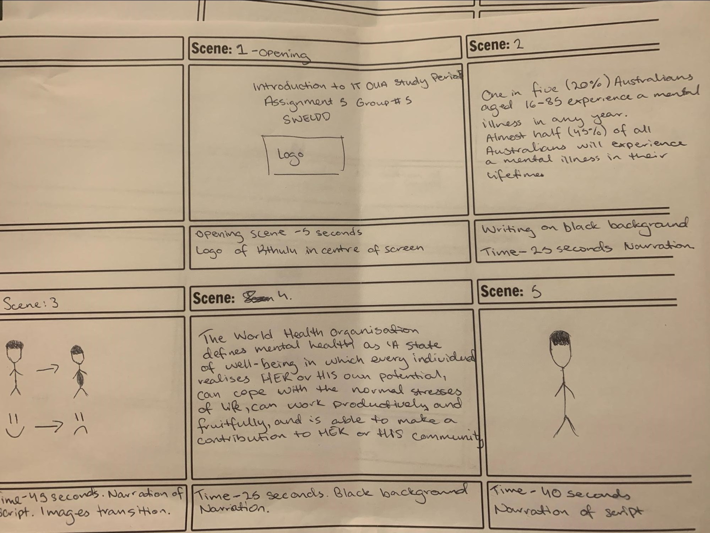
(fig 5.)
After the Java mockup was submitted, Jordan figured out a way to make the Javascript work in HTML. (fig 6.) He also came up with an interface that we could all test out. (fig 7.)
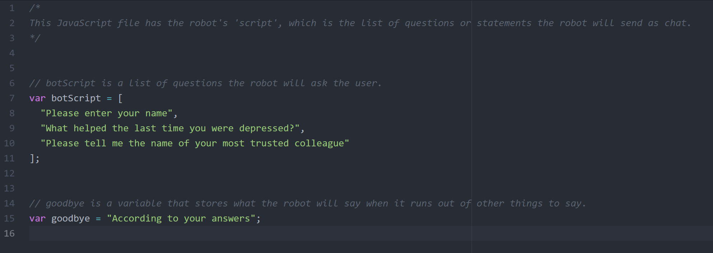
(fig 6.)
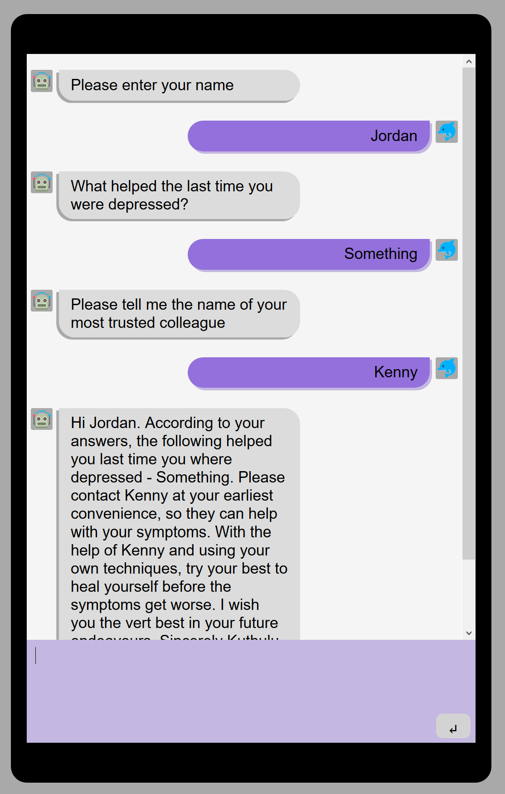
(fig 7.)
As the presentation was finalised (fig.8) by Chris, moving forward we decided to focus all attention on the report (fig. 9) as we decided that there was very little we could do in regards to our idea to make it better given that our technical proficiency is rudimentary at best.
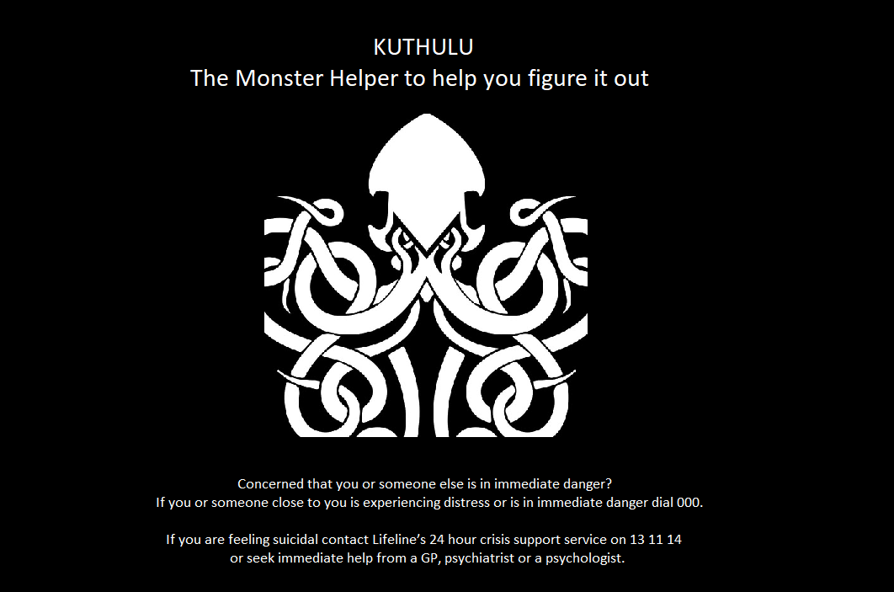
(Fig 8.)
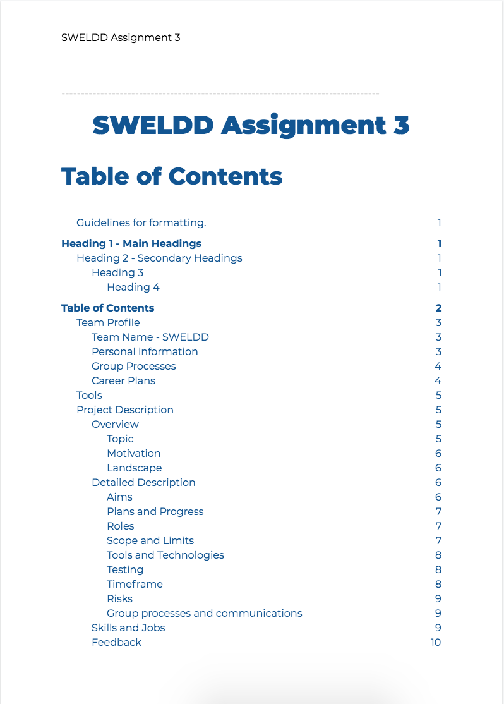
(fig 9.)
As a group, we have assigned each other roles based on our strengths and weaknesses. Our assigned roles will be analysed below, but it is also important to mention that these roles are not rigid and as a group we will often help each other out with different roles. The entire group has provided input into the final report and documents along the way.
Jordan - Bot developer / Javascript
The Javascript based chatbot is considered as the first prototype for our Kuthulu product. Jordan has been assigned the role of Javascript bot developer due to his experience with website technologies.
Francis - Site developer
Francis has been assigned the role as out main website developer. He has been assigned this role due to his experience HTML markup and the use of GitHub pages.
Suki - Content Creator
The original idea for the Kuthulu product was created by Suki. For this reason, and due to his enthusiasm he has been chosen to be the main creator of content for Kuthulu.
Sophie - Storyboard and timeline enforcer
Sophie has been chosen as our storyboard designer due to her interest and experience in comic and storyboard design. Sophie has been chosen as our timeline enforcer which involved setting meeting dates and times, deconflicting availability and ensuring attendance.
Chris - Script, narrator and meeting secretary
Chris has been assigned the role of script designer and narrator. He was chosen for this role because of his experience with speaking and script writing. He was also assigned as the meeting secretary to capture the meetings undertaken by the group.
The Kuthulu project has the potential to grow and evolve into something much more than in the confines of this assignment. For this project the goal is to create an online chat bot product that can be used to mitigate the risks of suicide. It will be available as an ‘always available’ resource where people can chat online with technology which is incapable of judgement, and always stays confidential. Potential uses for the Kuthulu technology are huge and include integration with smart home software such as Amazon’s Alexa or even use in suicide call centres or hospitals.
The main deliverable for this assignment will include a fully working prototype of the final chatbot product. This will be available on the team SWELDD website. The prototype will include a sample of questions and scenarios where Kuthulu is able to help. The chatbot will be Javascript based and run inside a regular web page, so It will be compatible with all modern web browsers to provide an equal level or care to all people. Specific deliverables for this project include the .html, .css and .js files required to run the software in a browser. The software is a modified version of a freely available chatbot template and provides attribution to the original creator where due.
HTML5, CSS3 and Javascript
These markup and scripting languages are free to use, and are in integral part of the modern internet. Web developers Francis and Jordan possess the necessary skills in these technologies.
Github Pages Website Hosting
This hosting platform is free to use and provides SSL encryption. The entire SWELDD team is experienced with GitHub Pages.
Github software such as Github Desktop
Provides collaboration between team members and a way to publish to Github. The entire SWELDD team is experienced with Github desktop applications.
Text editor such as Atom
Provides a means to create and modify the source code. The entire SWELDD team has experience with text editing programs.
Lumenvideo.com
The Lumen Video online software allowed us to create a great looking video presentation. This tool is simple to use, so prior experience was not necessary.
VLC Media Player
VLC was used to record our voice over for the presentation video. This tool is simple to use, so prior experience was not necessary.
Davinci Resolve 16
Davinci Resolve was used to combine our video presentation and voice over into one video. Parts of this tool are simple to use, so prior experience was not necessary.
The Java Mockup
Our original mockup for the chatbot was created in Eclipse using Java. The following screenshots show this process.
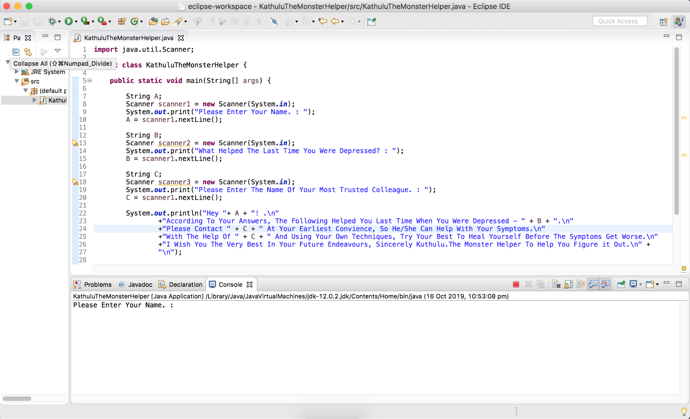
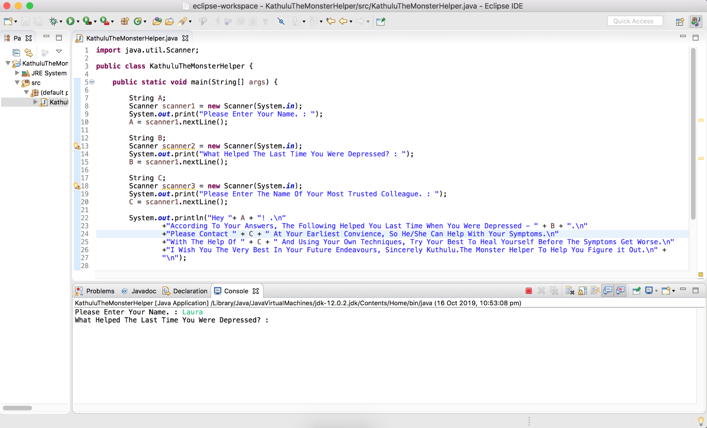
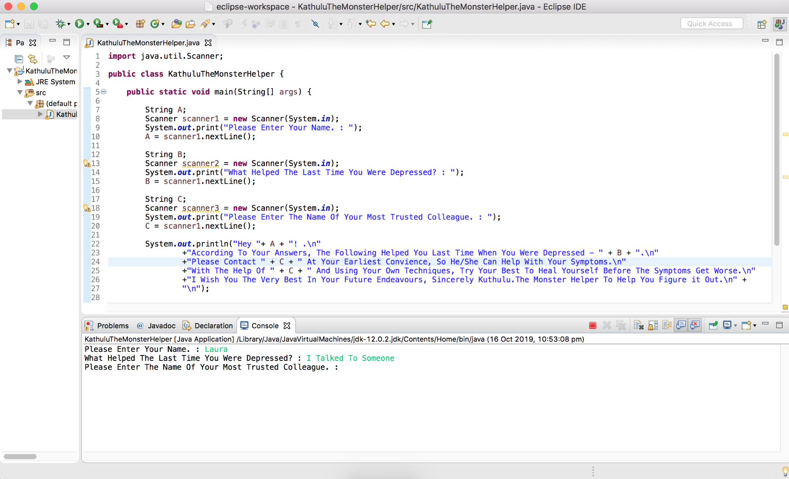
The Javascript Mockup
Once the Java mockup was complete, it was time to create a working prototype. The working prototype is created in HTML, CSS and Javascript. It is a remixed version of the chatbot created by Weaver (2019). The below screenshots shot how the original program was modified.
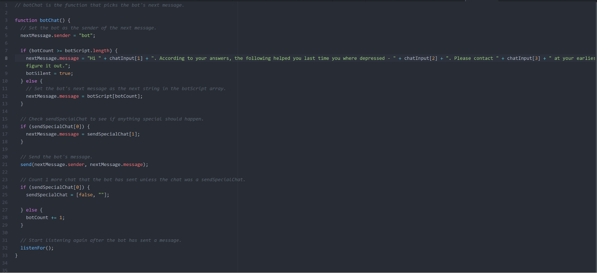
Once complete, the product was ready for testing. The below screenshot demonstrates the working prototype, which is available at: https://sweldd.github.io/A3/project-demo.html
Reference:
Weaver, P. (2019). javascript-chatbot. [online] Glitch.com. Available at: https://glitch.com/~javascript-chatbot [Accessed 10 Nov. 2019].
The following table represents a timeline that was loosely followed up until week 6, followed by the hypothetical timeline up until week 15.
|
Week 1 |
Team SWELDD decided on the project idea by discussing idea concepts within our group. “Kuthulu, the monster helper to help you figure it out” was chosen based on Suki’s idea. |
|
Week 2 |
Project concepts are further developed and work on the initial Java prototype is started. |
|
Week 3 |
Initial Java prototype is a success, and work is now being put into the first working mockup in HTML and Javascript. Other team members are working hard on the task 5 product video. |
|
Week 4 |
The Javascript prototype is complete and is working exactly as expected. Work is now ramping up on the final report. The task 5 storyboard is complete. |
|
Week 5 |
Further work on the report is underway. The group website is now getting some upgrades and the task 5 video is finalised. |
|
Week 6 |
Final week for finalising the report, all efforts are put towards this. This assignment will be submitted at the end of week 6, so further weeks are hypothetical only. |
|
Week 7 |
With the report now out of the way, more efforts will be put towards developing Kuthulu into its first finished product, an online chatbot. Team SWELDD will now be broken up into two main segments with a two person marketing team and a three person development team. The teams will be chosen this week based on assignment feedback and current skill sets of members. Marketing and development teams will decide on which features are of high priority so they can be implemented first. |
|
Week 8 |
The development team will decide on the best available chatbot platform and begin development of Kuthulu’s priority features. This development process will consume the following six weeks. During this week, the marketing team will conduct market research to find out where their efforts are most needed to make Kuthulu a success. |
|
Week 9 |
Now the marketing team has some market data, they will build out their marketing plan during this week. The marketing plan will have a six week duration leading up to the product launch. The development team continues their work. |
|
Week 10 |
The marketing plan is now in full swing and will continue up until the end of week 15. The development team continues their work and aim to be completed by the end of week 13. |
|
Week 11 |
Marketing and development continue... |
|
Week 12 |
Marketing and development continue... |
|
Week 13 |
The marketing plan continues. Development will be finalised by the end of this week so the product can be finalised and published. |
|
Week 14 |
Marketing is really heating up now so close to release. If marketing is a success, there will be a lot of interest about the product by this point. The development team is working on publishing the program to it’s online location and making sure users will be able to access the product. |
|
Week 15 |
The marketing and development teams finish up on their work and make sure everything is in place for the product launch at the end of the week. |
One of the risks that can be associated with the project is the software/Algorithm that we choose, could be too complicated to learn. As a group, we already had to deal with this issue. We decided to change from an open source design software, where the software is still being created, to a professional movie editing software for the presentation of our project.
Once our project is released, there is a risk that the creation of the project may be too costly for us to complete. We plan on mitigating this by bringing external mental health organisations onboard to assist with the funding. In addition to this, the upkeep and expansion of the initial project is also a risk as this is an unknown at this stage. As the project grows, we assume there will be a board of executives that will decide on how to handle these issues.
There is a high degree of risk that the project will not meet the group’s promises. With the rapid rise of Artificial Intelligence and Internet of Things coming into the market, we have built this project on our limited current market knowledge and technologies. There will no doubtedly be technology that either skips or falls by the wayside in this area. This will have a major effect on how our project is finalised.
Some risk extremes that could affect our project are that chance that hackers may sabotage the project, the breach and release of private health and personal information of customers and the chance that our project may be bested by a competitor that has greater ability and resources at their disposal.
Risks are inevitable with projects like this. The group has done its best to take into account the risks we can think of. Upon the release of the project, there will be risks that are not listed here and risks that we as a team have not thought of.
The group used an application called Discord. We had two set times per week to meet which were put in the timeline document. The group also used the Meeting Agenda document to note down everything that happened in a meeting. When one of the group members were not able to make a meeting time, everything that they missed was written down for them to look at when they were able to view it. The group tried to make sure that every member of the group was able to reschedule the meeting day where possible.
Below are the position descriptions to pitch to potential venture capitalists. These four job descriptions have been strategically chosen to maximise the use of monetary resources while developing Kuthulu into a cutting edge technology.
Software Engineer/CTO
A unique opportunity to join the SWELDD team of co-founders in a technical leadership position responsible for software engineering and team building.
You will work with the leadership team on a weekly basis to set the direction of the product and the business. As we bring more development in-house, you will have a chance to set the culture and define the skills for a small team of engineers.
As the CTO, you will oversee all development and be responsible for tech architecture and for maintaining the Kuthulu bot. It will be a mix of getting your hands dirty to build new features with managing external development suppliers to begin with.
Mental Health Advisor
A unique opportunity to join the SWELDD team of co-founders in an advisory position with responsibility for all psychological issues in our product development.
Who we are looking for:
Chief Marketing Officer (CMO)
A unique opportunity to join the SWELDD team of co-founders in a marketing position, responsible for growing the brand of the Kuthulu bot.
As the Chief Marketing Officer, you will be responsible for defining and implementing our marketing and growth programs. You will be able to roll up your sleeves to get started and will have the resources to build a team, internally and externally, to help you execute on the strategy you develop
What you will do:
Who we are looking for:
Administration Support
A unique opportunity to join the SWELDD team of co-founders in an administrative support position.
What you will do:
Who we are looking for: